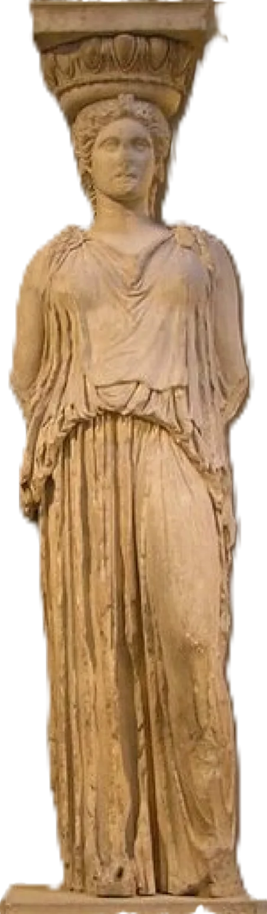

Click me to read the full poem.
until my hands went soft, still grasping at the air, and you uprooted stone / you cut down every walnut tree said: artifact museum piece 1816,0610.128, our number slimmed like a fragile moon. its light drew tears from stone. wind on marble, the sound of my grief.
Pentelic marble caryatid from the Erechtheion. This is one of six female figures that supported the architrave in the south porch of the Erechtheion. The woman wears a peplos pinned on each shoulder. Her hair is braided and falls in a thick rope down her back. She probably held a sacrificial vessel in one of the missing hands. The weight she bears is taken on the right leg, hidden by perpendicular folds of the garment. The other leg is bent with the drapery clinging to it. The head is surmounted by a capital with a beed and reel and egg and dart moulding. Part of the abacus also survives.